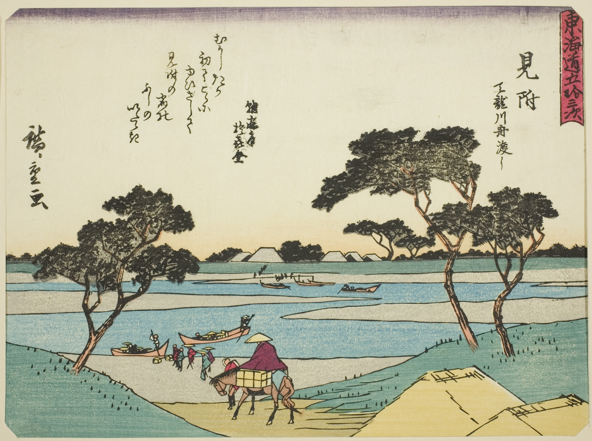

IceboundPastoral Landscape with RuinsThe Nativity and the Adoration of the ShepherdsThe Bay of Marseille, Seen from L'EstaqueView of CotopaxiView of Ponte Lugano on the Anio, from Views of Rome
Souvenir of TuscanyBordigheraThe Beach at Sainte-AdresseImprovisation No. 30 (Cannons)Self-PortraitAfter the Hurricane, Bahamas

Mitsuke: Ferries Crossing the Tenryu RiverOld Oaks at Bas BréauLandscape with Saint John on PatmosWater LiliesCliff Walk at PourvilleFlower Clouds